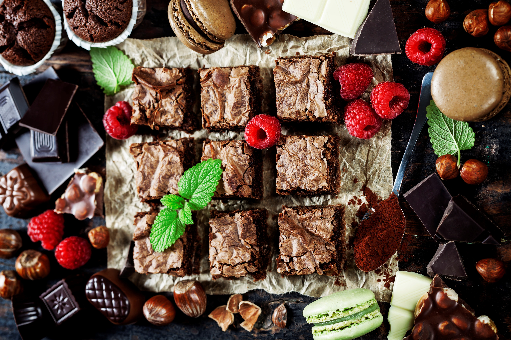

Deep-Dish Brownies
Biz McMahon's all-time favorite brownies (made-from-scratch recipe), thanks Granny McMahon <3
Ingredients
- 1 1/2 cups white sugar
- 3/4 cup butter, melted
- 1 1/2 teaspoons vanilla extract
- 3 large eggs
- 3/4 cup all-purpose flour
- 1/2 cup unsweetened cocoa powder
- 1/2 teaspoon baking powder
- 1/2 teaspoon salt
Instructions
- Pre-heat oven to 350 degrees F (175 C) - Grease 8-inch square pan
- Blend sugar, melted butter and vanila into a large bowl. Beat in eggs one at a time, mix well after each addition
- Combine flour, cocoa, baking powder and salt into a medium bowl. Gradually mix into egg mixture until combined
- Spread into prepared pan
- Bake in preheated oven until brownies begin pulling away from the sides of the pan (40-45 minutes)
- Let cool then cut into squares